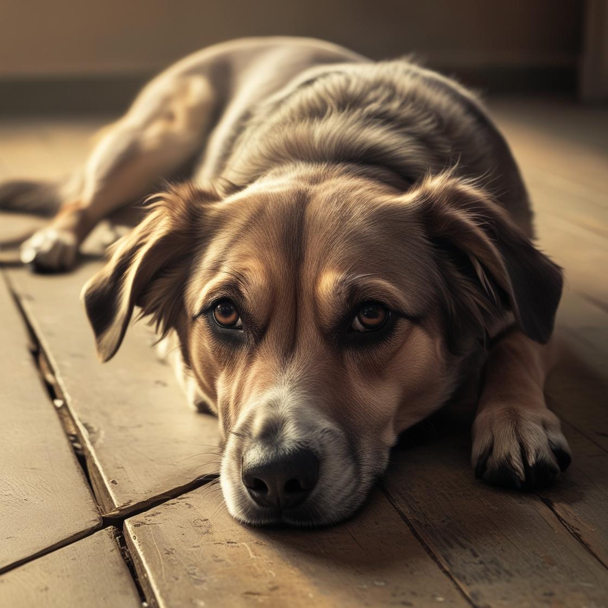

Pets Disponíveis para Adoção
Conheça os focinhos que estão esperando por uma família amorosa. Utilize o filtro para buscar seu novo melhor amigo!

Thor (Exemplo)
Idade/Porte: Adulto, porte médio.
Descrição: Muito dócil e brincalhão. Adora correr no quintal.
Localização: Centro da Cidade, 111 - Sorocaba/SP
Contato do Abrigo: (15) 99999-1234
Luna (Exemplo)
Idade/Porte: Adulta.
Descrição: Gatinha cinza, um pouco tímida no começo, mas muito carinhosa.
Localização: Alto da Boa Vista, 321 - Sorocaba/SP
Contato do Abrigo: contato@abrigo.com